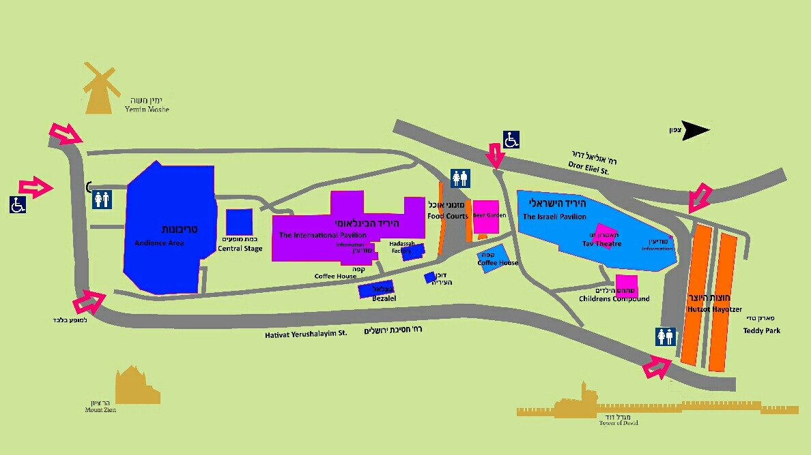

| LPS - Location-Page Services | |||||
|---|---|---|---|---|---|
|
מפה מצויירת נותנת הרבה מידע רלוונטי למקום בו אנחנו נמצאים. אנחנו באל.פי.אס מאפשרים למשתמשים שלנו גם לראות את מיקומם על המפה המצויירת, וזאת בקלות, על כל מכשיר, וללא התקנת אפליקציות – ישירות דרך קישור בדפדפן. בעל המפה, שהעלה את המפה לאתר, יכול לעדכן אותה בקלות, בכל עת, וכך לוודא שציבור המשתמשים מקבלים מידע עדכני ומהיימן. דף האנטרנט (אחרי טעינתו) לא עושה שימוש ברשת – ולכן יכול להיות בשימוש גם כאשר אין קליטה סלולרית או המכשיר לא מחובר לרשת. ניתן לשמור את הדף ולעשות בו שימוש מאוחר יותר גם במצב מנותק מהרשת או במקומות ללא קליטה. צור קשר: nopyanywhere@gmail.com |
 |
||||

|